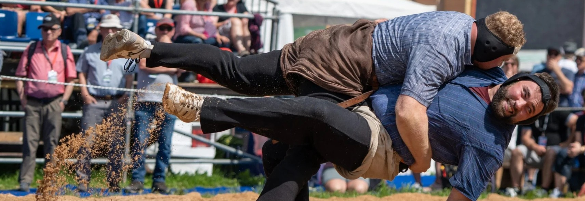
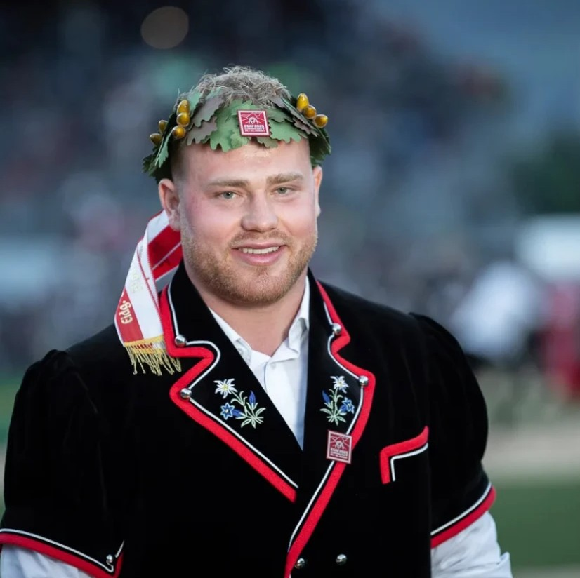
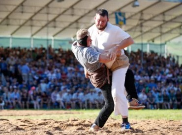
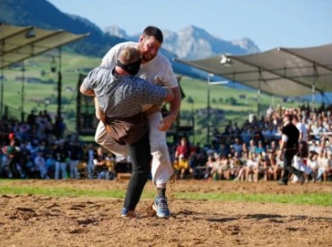
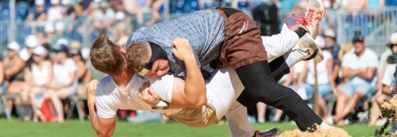
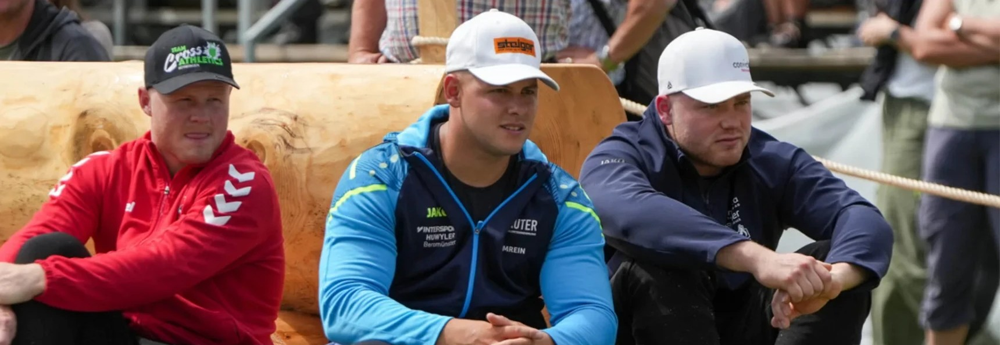

Doppelsieg am Innerschweizer in Arth
Marc und Samuel Schwyzer teilen sich nach gestelltem Schlussgang den Festsieg.
SRF Sport
Eidgenosse · ESAF 2025 Mollis
Schwinger aus Hasle im Entlebuch. Kompromisslos im Sägemehl, bodenständig daneben.

Über mich
«Als kleiner Junge wollte ich nach meinem ersten Schnuppertraining unbedingt in die Schwinghalle. Obwohl ich noch zu jung war, verfolgte ich den Schwingsport weiterhin begeistert vor dem Fernseher und raufte mich zu Hause mit meinem Vater und meinen älteren Cousins.»
«Mit sieben Jahren durfte ich endlich mit dem Schwingtraining beginnen – die Aufregung war riesig.»
Heute ist Marc Eidgenosse und Festsieger. Von Beruf ist er Zimmermann, im Sägemehl steht er für den Entlebucher Schwingerverband.
Diszipliniert, ehrgeizig, fokussiert. Wenn der Gang läuft, sucht Marc die Entscheidung.
Bodenständig, humorvoll, nahbar. Einer, mit dem man nach dem Fest gerne noch etwas trinkt.
Kein Kranz wird geschenkt. Jeder Gang wird erarbeitet. Im Training, im Kopf, im Sägemehl.
Marc Lustenberger · Eidgenosse
Mitschwingen
Klicke oder tippe in die Arena, so schnell du kannst – jeder Klick gibt Marc Kraft. Schafft er es vor Ablauf der Zeit, legt er den Gegner mit dem Wyberhaken ins Sägemehl. Sonst heisst es: gestellt.
Deine Bestzeit: –
Erfolge

· Sachseln
Ob- und Nidwaldner Kantonales: sechs Gänge, sechs Siege. Schlussgang gegen Jugendfreund Fabian Scherrer, gewonnen mit dem Wyberhaken. Siegermuni «Fredy».
· Mollis
Am Eidgenössischen Schwing- und Älplerfest Glarnerland+ holt Marc das Eichenlaub. Das grosse Ziel der Saison.

· Arth
Schlussgang gegen Samuel Schwyzer, nach 14 Minuten gestellt. Zwei Festsieger, Marc im Rang 1a – sein bisher grösster Erfolg.

Kraft Ein Körper, der acht Gänge an zwei Tagen trägt. Aufgebaut über Jahre.
Technik Griffe und Schwünge, tausendfach wiederholt – bis sie im Schlussgang sitzen.
Kopf Ruhig bleiben, wenn es zählt. Einen verlorenen Gang abhaken und weiter.
News
Marc und Samuel Schwyzer teilen sich nach gestelltem Schlussgang den Festsieg.
SRF SportDer Entlebucher Schwingerverband lädt zum Empfang für Marc.
Entlebucher SVDie Heimat empfängt Marc mit dem Eichenlaub aus Mollis.
Entlebucher SVNach dem ersten Kranzfestsieg: Marc über Sachseln und den Schlussgang gegen einen Jugendfreund.
SchlussgangSponsoren
Ohne Partner kein Kranz. Diese Betriebe, Marken und Institutionen tragen Marcs Weg mit – vom Entlebuch bis ans Eidgenössische.
Marc steht für Werte, die man in der Schweiz versteht: Einsatz, Fairness, Herkunft. Als Eidgenosse und Festsieger ist er ein glaubwürdiges Gesicht – auf dem Schwingplatz, an Anlässen und in den Medien.
Sponsoring anfragenFanartikel
Zahlung mit TWINT, bar oder per Einzahlungsschein. Abholung möglich.

Kontakt
Möchtest du Marc als Sponsor unterstützen, ihn für eine Autogrammstunde buchen oder Fanartikel bestellen? Melde dich unverbindlich.